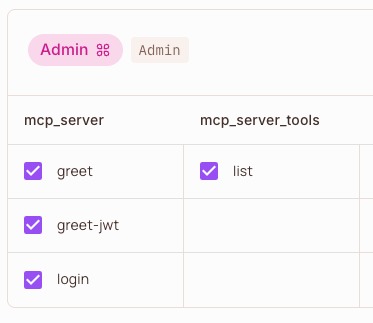
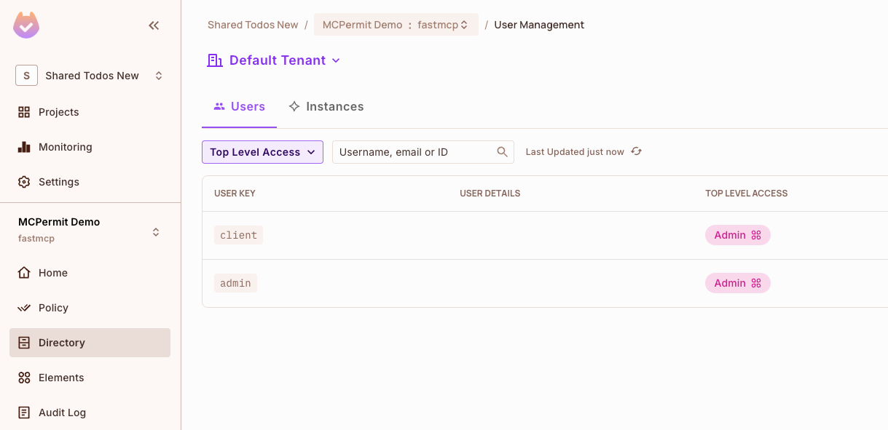
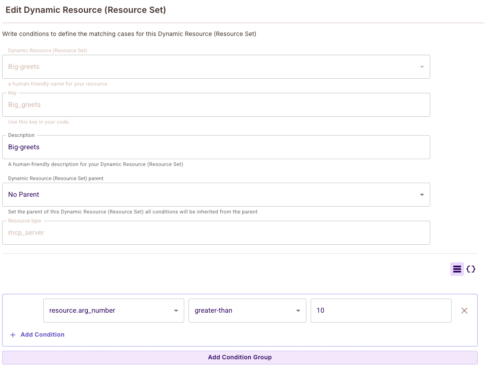
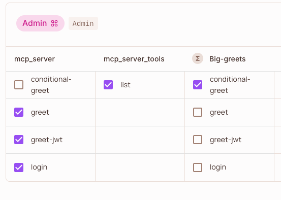

Add policy-based authorization to your FastMCP servers with one-line code addition with the Permit.io authorization middleware.
Control which tools, resources and prompts MCP clients can view and execute on your server. Define dynamic policies using Permit.io's powerful RBAC, ABAC, and REBAC capabilities, and obtain comprehensive audit logs of all access attempts and violations.
How it Works
Leveraging FastMCP's Middleware, the Permit.io middleware intercepts all MCP requests to your server and automatically maps MCP methods to authorization checks against your Permit.io policies; covering both server methods and tool execution.
Policy Mapping
The middleware automatically maps MCP methods to Permit.io resources and actions:
- MCP server methods (e.g.,
tools/list,resources/read): - Resource:
{server_name}_{component}(e.g.,myserver_tools) - Action: The method verb (e.g.,
list,read) - Tool execution (method
tools/call): - Resource:
{server_name}(e.g.,myserver) - Action: The tool name (e.g.,
greet)

Example: In Permit.io, the 'Admin' role is granted permissions on resources and actions as mapped by the middleware. For example, 'greet', 'greet-jwt', and 'login' are actions on the 'mcp_server' resource, and 'list' is an action on the 'mcp_server_tools' resource.
Note: Don't forget to assign the relevant role (e.g., Admin, User) to the user authenticating to your MCP server (such as the user in the JWT) in the Permit.io Directory. Without the correct role assignment, users will not have access to the resources and actions you've configured in your policies.

Example: In Permit.io Directory, both 'client' and 'admin' users are assigned the 'Admin' role, granting them the permissions defined in your policy mapping.
For detailed policy mapping examples and configuration, see Detailed Policy Mapping.
Listing Operations
The middleware behaves as a filter for listing operations (tools/list, resources/list, prompts/list), hiding to the client components that are not authorized by the defined policies.
sequenceDiagram
participant MCPClient as MCP Client
participant PermitMiddleware as Permit.io Middleware
participant MCPServer as FastMCP Server
participant PermitPDP as Permit.io PDP
MCPClient->>PermitMiddleware: MCP Listing Request (e.g., tools/list)
PermitMiddleware->>MCPServer: MCP Listing Request
MCPServer-->>PermitMiddleware: MCP Listing Response
PermitMiddleware->>PermitPDP: Authorization Checks
PermitPDP->>PermitMiddleware: Authorization Decisions
PermitMiddleware-->>MCPClient: Filtered MCP Listing Response
Execution Operations
The middleware behaves as an enforcement point for execution operations (tools/call, resources/read, prompts/get), blocking operations that are not authorized by the defined policies.
sequenceDiagram
participant MCPClient as MCP Client
participant PermitMiddleware as Permit.io Middleware
participant MCPServer as FastMCP Server
participant PermitPDP as Permit.io PDP
MCPClient->>PermitMiddleware: MCP Execution Request (e.g., tools/call)
PermitMiddleware->>PermitPDP: Authorization Check
PermitPDP->>PermitMiddleware: Authorization Decision
PermitMiddleware-->>MCPClient: MCP Unauthorized Error (if denied)
PermitMiddleware->>MCPServer: MCP Execution Request (if allowed)
MCPServer-->>PermitMiddleware: MCP Execution Response (if allowed)
PermitMiddleware-->>MCPClient: MCP Execution Response (if allowed)
Add Authorization to Your Server
Prerequisites
- Permit.io Account: Sign up at permit.io
- PDP Setup: Run the Permit.io PDP locally or use the cloud PDP (RBAC only)
- API Key: Get your Permit.io API key from the dashboard
Run the Permit.io PDP
Run the PDP locally with Docker:
docker run -p 7766:7766 permitio/pdp:latest
Or use the cloud PDP URL: https://cloudpdp.api.permit.io
Create a Server with Authorization
First, install the permit-fastmcp package:
# Using UV (recommended)
uv add permit-fastmcp
# Using pip
pip install permit-fastmcp
Then create a FastMCP server and add the Permit.io middleware:
```python server.py from fastmcp import FastMCP from permit_fastmcp.middleware.middleware import PermitMcpMiddleware
mcp = FastMCP("Secure FastMCP Server 🔒")
@mcp.tool def greet(name: str) -> str: """Greet a user by name""" return f"Hello, {name}!"
@mcp.tool def add(a: int, b: int) -> int: """Add two numbers""" return a + b
Add Permit.io authorization middleware
mcp.add_middleware(PermitMcpMiddleware( permit_pdp_url="http://localhost:7766", permit_api_key="your-permit-api-key" ))
if name == "main": mcp.run(transport="http")
### Configure Access Policies
Create your authorization policies in the Permit.io dashboard:
1. **Create Resources**: Define resources like `mcp_server` and `mcp_server_tools`
2. **Define Actions**: Add actions like `greet`, `add`, `list`, `read`
3. **Create Roles**: Define roles like `Admin`, `User`, `Guest`
4. **Assign Permissions**: Grant roles access to specific resources and actions
5. **Assign Users**: Assign roles to users in the Permit.io Directory
For step-by-step setup instructions and troubleshooting, see [Getting Started & FAQ](https://github.com/permitio/permit-fastmcp/blob/main/docs/getting-started.md).
#### Example Policy Configuration
Policies are defined in the Permit.io dashboard, but you can also use the [Permit.io Terraform provider](https://github.com/permitio/terraform-provider-permitio) to define policies in code.
```terraform
# Resources
resource "permitio_resource" "mcp_server" {
name = "mcp_server"
key = "mcp_server"
actions = {
"greet" = { name = "greet" }
"add" = { name = "add" }
}
}
resource "permitio_resource" "mcp_server_tools" {
name = "mcp_server_tools"
key = "mcp_server_tools"
actions = {
"list" = { name = "list" }
}
}
# Roles
resource "permitio_role" "Admin" {
key = "Admin"
name = "Admin"
permissions = [
"mcp_server:greet",
"mcp_server:add",
"mcp_server_tools:list"
]
}
You can also use the Permit.io CLI, API or SDKs to manage policies, as well as writing policies directly in REGO (Open Policy Agent's policy language).
For complete policy examples including ABAC and RBAC configurations, see Example Policies.
Identity Management
The middleware supports multiple identity extraction modes:
- Fixed Identity: Use a fixed identity for all requests
- Header-based: Extract identity from HTTP headers
- JWT-based: Extract and verify JWT tokens
- Source-based: Use the MCP context source field
For detailed identity mode configuration and environment variables, see Identity Modes & Environment Variables.
JWT Authentication Example
import os
# Configure JWT identity extraction
os.environ["PERMIT_MCP_IDENTITY_MODE"] = "jwt"
os.environ["PERMIT_MCP_IDENTITY_JWT_SECRET"] = "your-jwt-secret"
mcp.add_middleware(PermitMcpMiddleware(
permit_pdp_url="http://localhost:7766",
permit_api_key="your-permit-api-key"
))
ABAC Policies with Tool Arguments
The middleware supports Attribute-Based Access Control (ABAC) policies that can evaluate tool arguments as attributes. Tool arguments are automatically flattened as individual attributes (e.g., arg_name, arg_number) for granular policy conditions.

Example: Create dynamic resources with conditions like resource.arg_number greater-than 10 to allow the conditional-greet tool only when the number argument exceeds 10.
Example: Conditional Access
Create a dynamic resource with conditions like resource.arg_number greater-than 10 to allow the conditional-greet tool only when the number argument exceeds 10.
@mcp.tool
def conditional_greet(name: str, number: int) -> str:
"""Greet a user only if number > 10"""
return f"Hello, {name}! Your number is {number}"

Example: The Admin role is granted access to the "conditional-greet" action on the "Big-greets" dynamic resource, while other tools like "greet", "greet-jwt", and "login" are granted on the base "mcp_server" resource.
For comprehensive ABAC configuration and advanced policy examples, see ABAC Policies with Tool Arguments.
Run the Server
Start your FastMCP server normally:
python server.py
The middleware will now intercept all MCP requests and check them against your Permit.io policies. Requests include user identification through the configured identity mode and automatic mapping of MCP methods to authorization resources and actions.
Advanced Configuration
Environment Variables
Configure the middleware using environment variables:
# Permit.io configuration
export PERMIT_MCP_PERMIT_PDP_URL="http://localhost:7766"
export PERMIT_MCP_PERMIT_API_KEY="your-api-key"
# Identity configuration
export PERMIT_MCP_IDENTITY_MODE="jwt"
export PERMIT_MCP_IDENTITY_JWT_SECRET="your-jwt-secret"
# Method configuration
export PERMIT_MCP_KNOWN_METHODS='["tools/list","tools/call"]'
export PERMIT_MCP_BYPASSED_METHODS='["initialize","ping"]'
# Logging configuration
export PERMIT_MCP_ENABLE_AUDIT_LOGGING="true"
For a complete list of all configuration options and environment variables, see Configuration Reference.
Custom Middleware Configuration
from permit_fastmcp.middleware.middleware import PermitMcpMiddleware
middleware = PermitMcpMiddleware(
permit_pdp_url="http://localhost:7766",
permit_api_key="your-api-key",
enable_audit_logging=True,
bypass_methods=["initialize", "ping", "health/*"]
)
mcp.add_middleware(middleware)
For advanced configuration options and custom middleware extensions, see Advanced Configuration.
Example: Complete JWT Authentication Server
See the example server for a full implementation with JWT-based authentication. For additional examples and usage patterns, see Example Server:
from fastmcp import FastMCP, Context
from permit_fastmcp.middleware.middleware import PermitMcpMiddleware
import jwt
import datetime
# Configure JWT identity extraction
os.environ["PERMIT_MCP_IDENTITY_MODE"] = "jwt"
os.environ["PERMIT_MCP_IDENTITY_JWT_SECRET"] = "mysecretkey"
mcp = FastMCP("My MCP Server")
@mcp.tool
def login(username: str, password: str) -> str:
"""Login to get a JWT token"""
if username == "admin" and password == "password":
token = jwt.encode(
{"sub": username, "exp": datetime.datetime.utcnow() + datetime.timedelta(hours=1)},
"mysecretkey",
algorithm="HS256"
)
return f"Bearer {token}"
raise Exception("Invalid credentials")
@mcp.tool
def greet_jwt(ctx: Context) -> str:
"""Greet a user by extracting their name from JWT"""
# JWT extraction handled by middleware
return "Hello, authenticated user!"
mcp.add_middleware(PermitMcpMiddleware(
permit_pdp_url="http://localhost:7766",
permit_api_key="your-permit-api-key"
))
if __name__ == "__main__":
mcp.run(transport="http")